CODING AGENTS AS PIXEL WORLD MODELS
traex/DeepSeek-V4.1-Flash · phygen_109
点击播放 · 原生 RGB 像素
逐轮保存的候选
回放视频、检查图与代码变化。
每份候选均可单独播放。实际图片检查记录在下方工具轨迹中。
候选 01播放与检查图
点击播放 · 原生 RGB 像素

展开代码变化
--- 上一保存版本
+++ 本次保存版本
@@ -0,0 +1,518 @@
+"""Procedural RGB timelapse: tea steeping and boiling in a glass teapot."""
+
+from __future__ import annotations
+
+import math
+from pathlib import Path
+
+import numpy as np
+from PIL import Image, ImageDraw, ImageFilter, ImageEnhance
+
+import artifact_io
+
+
+ROOT = Path(__file__).resolve().parent
+SPEC_W, SPEC_H = 256, 144
+SS = 4
+W, H = SPEC_W * SS, SPEC_H * SS
+RNG = np.random.default_rng(1092026)
+
+
+def p(value):
+ return int(round(value * SS))
+
+
+def pts(values):
+ return [(p(x), p(y)) for x, y in values]
+
+
+def rgba(color, alpha=255):
+ return tuple(color) + (int(alpha),)
+
+
+def lerp(a, b, t):
+ return a + (b - a) * t
+
+
+def lerp_color(a, b, t):
+ return tuple(int(round(lerp(x, y, t))) for x, y in zip(a, b))
+
+
+def smoothstep(edge0, edge1, x):
+ t = np.clip((x - edge0) / (edge1 - edge0), 0.0, 1.0)
+ return t * t * (3.0 - 2.0 * t)
+
+
+def cubic(p0, p1, p2, p3, n=28):
+ result = []
+ for i in range(n + 1):
+ t = i / n
+ u = 1.0 - t
+ result.append(
+ (
+ u**3 * p0[0] + 3 * u * u * t * p1[0] + 3 * u * t * t * p2[0] + t**3 * p3[0],
+ u**3 * p0[1] + 3 * u * u * t * p1[1] + 3 * u * t * t * p2[1] + t**3 * p3[1],
+ )
+ )
+ return result
+
+
+def background_layer(t):
+ yy, xx = np.mgrid[0:H, 0:W].astype(np.float32)
+ xn = xx / W
+ yn = yy / H
+ warm = 0.10 + 0.24 * t
+
+ top = np.array([9, 16, 19], dtype=np.float32)
+ bottom = np.array([23, 35, 36], dtype=np.float32)
+ img = top[None, None, :] + (bottom - top)[None, None, :] * np.clip(yn / 0.82, 0, 1)[..., None]
+
+ # Soft window light on the left, cool and quiet.
+ window = np.exp(-((xn - 0.08) / 0.15) ** 2) * np.clip(1.1 - yn, 0, 1)
+ img += window[..., None] * np.array([8, 15, 16], dtype=np.float32)
+
+ # A warm bloom grows behind the pot as the plate heats up.
+ glow = np.exp(-(((xn - 0.50) / 0.25) ** 2 + ((yn - 0.60) / 0.31) ** 2))
+ img += glow[..., None] * np.array([31, 17, 7], dtype=np.float32) * warm
+
+ # Very restrained tile seams give the wall scale without stealing focus.
+ seam = (np.abs(((xn * 12.0) % 1.0) - 0.5) > 0.486) | (
+ np.abs(((yn * 12.0) % 1.0) - 0.5) > 0.493
+ )
+ seam &= (yn < 0.79)
+ img += seam[..., None] * np.array([4, 6, 6], dtype=np.float32)
+
+ noise = RNG.normal(0, 1, (H // 4, W // 4)).astype(np.float32)
+ noise = np.asarray(Image.fromarray(((noise - noise.min()) * 25).astype(np.uint8)).resize((W, H), Image.Resampling.BILINEAR))
+ img += (noise[..., None] - 12) * 0.16
+ return np.clip(img, 0, 255).astype(np.uint8)
+
+
+def draw_counter(base, t):
+ layer = Image.new("RGBA", (W, H), (0, 0, 0, 0))
+ d = ImageDraw.Draw(layer)
+
+ # Dark walnut counter, kept low-contrast so the amber tea carries the color.
+ d.rectangle((0, p(114), W, H), fill=rgba((43, 28, 22), 255))
+ d.rectangle((0, p(114), W, p(121)), fill=rgba((63, 39, 28), 255))
+ d.rectangle((0, p(121), W, H), fill=rgba((34, 23, 20), 255))
+ d.line((0, p(114), W, p(114)), fill=rgba((121, 78, 48), 150), width=p(0.7))
+ d.line((0, p(121), W, p(121)), fill=rgba((17, 12, 11), 210), width=p(1.0))
+
+ for i in range(14):
+ y = 116 + i * 1.9
+ amp = 0.6 + (i % 4) * 0.18
+ phase = i * 0.71
+ points = []
+ for x in np.linspace(-5, 261, 64):
+ yy = y + amp * math.sin(x * 0.055 + phase) + 0.25 * math.sin(x * 0.16 + i)
+ points.append((p(x), p(yy)))
+ shade = (73, 45, 30, 45) if i % 3 else (25, 16, 14, 65)
+ d.line(points, fill=shade, width=p(0.45))
+
+ # Stove plate, with its front lip and a tiny control readout.
+ d.rounded_rectangle((p(67), p(110), p(189), p(128)), radius=p(8), fill=rgba((15, 18, 19), 255))
+ d.ellipse((p(70), p(108), p(186), p(124)), fill=rgba((22, 26, 27), 255))
+ d.arc((p(70), p(108), p(186), p(124)), 0, 180, fill=rgba((67, 72, 69), 115), width=p(0.7))
+ d.rounded_rectangle((p(193), p(122), p(244), p(138)), radius=p(2.5), fill=rgba((12, 15, 16), 255))
+ d.line((p(195), p(123), p(242), p(123)), fill=rgba((66, 75, 73), 95), width=p(0.45))
+
+ base.alpha_composite(layer)
+
+
+def draw_heat(base, t):
+ if t <= 0.01:
+ return
+ glow = Image.new("RGBA", (W, H), (0, 0, 0, 0))
+ d = ImageDraw.Draw(glow)
+ strength = int(42 + 105 * t)
+ for inset in (4, 8, 12, 16):
+ d.arc(
+ (p(74 + inset), p(108 + inset * 0.38), p(182 - inset), p(124 - inset * 0.20)),
+ 0,
+ 180,
+ fill=(255, 82, 18, max(15, strength - inset * 4)),
+ width=p(0.65),
+ )
+ d.ellipse((p(94), p(112), p(162), p(122)), fill=(255, 79, 16, int(30 + 40 * t)))
+ glow = glow.filter(ImageFilter.GaussianBlur(p(4.2)))
+ base.alpha_composite(glow)
+
+ core = Image.new("RGBA", (W, H), (0, 0, 0, 0))
+ dc = ImageDraw.Draw(core)
+ dc.arc((p(79), p(109), p(177), p(123)), 4, 176, fill=(255, 118, 34, int(35 + 60 * t)), width=p(0.55))
+ base.alpha_composite(core)
+
+
+def body_mask_image():
+ mask = Image.new("L", (W, H), 0)
+ d = ImageDraw.Draw(mask)
+ d.ellipse((p(72), p(59), p(184), p(118)), fill=255)
+ # Flatten the very bottom into a stable seated base.
+ d.rectangle((0, p(116), W, H), fill=0)
+ d.ellipse((p(82), p(109), p(174), p(119)), fill=255)
+ d.rectangle((0, p(116), W, H), fill=0)
+ return mask
+
+
+def liquid_mask(t, surface):
+ yy, xx = np.mgrid[0:H, 0:W].astype(np.float32)
+ xb = xx / SS
+ yb = yy / SS
+ cx, cy, rx, ry = 128.0, 88.5, 55.4, 29.2
+ in_body = ((xb - cx) / rx) ** 2 + ((yb - cy) / ry) ** 2 <= 1.0
+ in_body &= yb <= 116.2
+ wave = 0.34 * np.sin((xb - 128) * 0.20 + t * 8.0) + 0.20 * np.sin((xb - 128) * 0.51 - t * 12.0)
+ in_liquid = yb >= surface + wave
+ return (in_body & in_liquid).astype(np.uint8) * 255
+
+
+def draw_liquid(base, t):
+ surface = lerp(83.0, 80.7, t) + 0.55 * math.sin(t * 7.0)
+ yy, xx = np.mgrid[0:H, 0:W].astype(np.float32)
+ xb, yb = xx / SS, yy / SS
+
+ pale = np.array([196, 162, 79], dtype=np.float32)
+ amber = np.array([150, 69, 24], dtype=np.float32)
+ color = pale + (amber - pale) * smoothstep(0.08, 0.96, t)
+
+ vertical = np.clip((yb - surface) / max(1.0, 116.0 - surface), 0, 1)
+ radial = np.clip(1.0 - np.sqrt(((xb - 128) / 70) ** 2 + ((yb - 95) / 35) ** 2), 0, 1)
+ liquid = np.empty((H, W, 3), dtype=np.float32)
+ liquid[:] = color[None, None, :]
+ liquid *= (0.76 + 0.35 * vertical[..., None])
+ liquid += (radial[..., None] ** 2) * np.array([30, 14, 2], dtype=np.float32) * (0.5 + 0.4 * t)
+ liquid += np.array([9, 8, 3], dtype=np.float32) * (1.0 - vertical[..., None])
+
+ # Tea cloud: slow, coherent plumes spreading from the leaf pile.
+ cloud = (
+ 0.46 * np.sin(xb * 0.155 + yb * 0.071 + t * 2.7)
+ + 0.30 * np.sin(xb * 0.077 - yb * 0.188 - t * 1.9)
+ + 0.24 * np.sin(xb * 0.29 + yb * 0.13 + t * 4.2)
+ )
+ cloud = np.clip((cloud + 0.22) * 0.45, 0, 1)
+ cloud_alpha = (0.05 + 0.22 * t) * smoothstep(surface, surface + 9, yb)
+ liquid = liquid * (1.0 - cloud_alpha[..., None]) + np.array([103, 45, 18]) * cloud_alpha[..., None]
+
+ # Warm light transmitted through the body near the hot base.
+ heat = np.exp(-(((xb - 128) / 44) ** 2 + ((yb - 114) / 7.5) ** 2))
+ liquid += heat[..., None] * np.array([40, 12, 1], dtype=np.float32) * t
+
+ liquid_img = Image.fromarray(np.clip(liquid, 0, 255).astype(np.uint8), "RGB").convert("RGBA")
+ mask = liquid_mask(t, surface)
+ # Suppress the bottom edge for a glassy, submerged look.
+ mask_arr = np.asarray(mask).astype(np.float32)
+ mask_arr *= np.clip((116.0 - yb) / 2.2, 0, 1)
+ mask = Image.fromarray(mask_arr.astype(np.uint8), "L")
+ base.paste(liquid_img, (0, 0), mask)
+
+ # Meniscus: a bright curved line where the tea meets the glass.
+ men = Image.new("RGBA", (W, H), (0, 0, 0, 0))
+ dm = ImageDraw.Draw(men)
+ line = []
+ for x in np.linspace(74, 182, 100):
+ yy2 = surface + 0.34 * math.sin((x - 128) * 0.20 + t * 8.0) + 0.20 * math.sin((x - 128) * 0.51 - t * 12.0)
+ line.append((p(x), p(yy2)))
+ dm.line(line, fill=(255, 219, 135, 105), width=p(0.55))
+ base.alpha_composite(men)
+ return surface
+
+
+def leaf_polygon(cx, cy, length, width, angle):
+ ca, sa = math.cos(angle), math.sin(angle)
+ points = []
+ for u, v in ((-0.50, 0.0), (-0.18, -0.42), (0.22, -0.37), (0.52, 0.0), (0.20, 0.38), (-0.20, 0.39)):
+ x = u * length
+ y = v * width
+ points.append((p(cx + x * ca - y * sa), p(cy + x * sa + y * ca)))
+ return points
+
+
+def draw_leaves(base, t, surface):
+ layer = Image.new("RGBA", (W, H), (0, 0, 0, 0))
+ d = ImageDraw.Draw(layer)
+ count = 17
+ for i in range(count):
+ r = np.random.default_rng(4100 + i)
+ seed_x = float(r.uniform(-29, 29))
+ seed_y = float(r.uniform(109.5, 114.0))
+ reveal = float(r.uniform(0.03, 0.53))
+ if t < reveal:
+ continue
+ u = smoothstep(reveal, min(0.98, reveal + 0.42), t)
+ rise = float(r.uniform(4.0, 17.0)) * u
+ drift = float(r.uniform(-10.0, 10.0)) * u
+ swirl = math.sin(t * (3.2 + i * 0.11) + i * 1.7) * (0.7 + 4.3 * u)
+ cx = 128.0 + seed_x * (1.0 - 0.22 * u) + drift + swirl
+ cy = seed_y - rise + 0.8 * math.sin(t * 5.0 + i)
+ length = float(r.uniform(2.6, 5.3))
+ width = length * float(r.uniform(0.28, 0.46))
+ angle = float(r.uniform(0, math.pi)) + math.sin(t * 2.5 + i) * 0.28
+ color = [(45, 68, 29), (63, 72, 28), (73, 54, 22), (86, 57, 23), (48, 54, 24)][i % 5]
+ alpha = int(115 + 110 * min(1.0, u))
+ # A tiny soft shadow lifts leaves off the liquid color field.
+ d.ellipse(
+ (p(cx - length * 0.34), p(cy - width * 0.30), p(cx + length * 0.34), p(cy + width * 0.30)),
+ fill=(56, 29, 12, int(alpha * 0.18)),
+ )
+ d.polygon(leaf_polygon(cx, cy, length, width, angle), fill=rgba(color, alpha))
+ if length > 4.0:
+ shine = (min(255, color[0] + 30), min(255, color[1] + 32), min(255, color[2] + 13), 70)
+ d.line(
+ (
+ p(cx - length * 0.24 * math.cos(angle)),
+ p(cy - length * 0.24 * math.sin(angle)),
+ p(cx + length * 0.20 * math.cos(angle)),
+ p(cy + length * 0.20 * math.sin(angle)),
+ ),
+ fill=shine,
+ width=p(0.35),
+ )
+ # Clip leaves to the tea body and below the surface.
+ clip = Image.fromarray(liquid_mask(t, surface), "L")
+ base.paste(layer, (0, 0), Image.composite(layer.getchannel("A"), Image.new("L", (W, H), 0), clip))
+
+
+def draw_bubbles(base, t, surface):
+ if t < 0.12:
+ return
+ layer = Image.new("RGBA", (W, H), (0, 0, 0, 0))
+ d = ImageDraw.Draw(layer)
+ max_count = int(7 + 42 * smoothstep(0.12, 0.96, t))
+ for i in range(max_count):
+ r = np.random.default_rng(8100 + i)
+ speed = float(r.uniform(0.55, 1.15))
+ phase = float(r.uniform(0.0, 1.0))
+ progress = (phase + t * speed * 1.85) % 1.0
+ depth = 1.0 - progress
+ cy = 113.5 - depth * (113.5 - surface - 1.8)
+ base_x = 128.0 + float(r.uniform(-34, 34))
+ cx = base_x + math.sin(progress * 8.0 + i * 2.2) * (0.4 + 1.2 * t)
+ radius = float(r.uniform(0.36, 1.24)) * (0.72 + 0.52 * t)
+ alpha = int(55 + 135 * t)
+ d.ellipse((p(cx - radius), p(cy - radius), p(cx + radius), p(cy + radius)), outline=(255, 225, 154, alpha), width=p(0.42))
+ if radius > 0.72:
+ d.arc(
+ (p(cx - radius * 0.70), p(cy - radius * 0.70), p(cx + radius * 0.30), p(cy + radius * 0.30)),
+ 195,
+ 330,
+ fill=(255, 249, 216, min(255, alpha + 40)),
+ width=p(0.34),
+ )
+ clip = Image.fromarray(liquid_mask(t, surface), "L")
+ base.paste(layer, (0, 0), Image.composite(layer.getchannel("A"), Image.new("L", (W, H), 0), clip))
+
+
+def draw_glass_body(base, t):
+ layer = Image.new("RGBA", (W, H), (0, 0, 0, 0))
+ d = ImageDraw.Draw(layer)
+ mask = body_mask_image()
+
+ glass = Image.new("RGBA", (W, H), (0, 0, 0, 0))
+ dg = ImageDraw.Draw(glass)
+ dg.ellipse((p(72), p(59), p(184), p(118)), fill=(126, 168, 165, 22), outline=(158, 194, 186, 112), width=p(1.05))
+ dg.ellipse((p(82), p(109), p(174), p(119)), fill=(103, 119, 111, 18), outline=(152, 174, 160, 86), width=p(0.75))
+ dg.rectangle((0, p(116), W, H), fill=(0, 0, 0, 0))
+ base.paste(glass, (0, 0), Image.composite(glass.getchannel("A"), Image.new("L", (W, H), 0), mask))
+
+ # Neck and shoulder glass.
+ d.rounded_rectangle((p(112), p(47), p(144), p(65)), radius=p(5), fill=rgba((143, 178, 170), 22), outline=rgba((177, 205, 194), 100), width=p(0.8))
+ d.arc((p(105), p(57), p(151), p(72)), 192, 348, fill=rgba((181, 208, 195), 95), width=p(0.75))
+
+ # Soft inner reflections and cool side highlights.
+ d.arc((p(78), p(66), p(177), p(111)), 105, 245, fill=rgba((206, 231, 216), 80), width=p(1.15))
+ d.arc((p(82), p(70), p(174), p(108)), 286, 55, fill=rgba((124, 167, 164), 70), width=p(0.7))
+ d.line((p(85), p(87), p(86), p(103)), fill=(225, 239, 220, 118), width=p(0.75))
+ d.line((p(91), p(72), p(101), p(65)), fill=(231, 244, 224, 78), width=p(0.58))
+ d.arc((p(160), p(78), p(182), p(105)), 274, 74, fill=(190, 217, 203, 55), width=p(0.62))
+
+ # Glass base thickness.
+ d.arc((p(84), p(108), p(172), p(119)), 8, 172, fill=rgba((202, 218, 200), 95), width=p(0.85))
+ base.alpha_composite(layer)
+
+
+def draw_spout_and_handle(base, t):
+ # Spout, drawn as a translucent swept glass form.
+ layer = Image.new("RGBA", (W, H), (0, 0, 0, 0))
+ d = ImageDraw.Draw(layer)
+ upper = cubic((78, 76), (67, 68), (58, 62), (51, 56), 24)
+ lower = cubic((51, 60), (60, 68), (72, 80), (84, 87), 24)
+ polygon = upper + lower[::-1]
+ d.polygon(pts(polygon), fill=(122, 157, 151, 50))
+ d.line(pts(upper), fill=(190, 216, 203, 128), width=p(0.8))
+ d.line(pts(lower), fill=(125, 157, 151, 88), width=p(0.7))
+ d.line(pts(cubic((76, 79), (65, 73), (59, 68), (53, 61), 18)), fill=(228, 238, 219, 70), width=p(0.48))
+ d.ellipse((p(49.2), p(54.4), p(54.0), p(61.4)), fill=(58, 83, 79, 45), outline=(191, 216, 204, 120), width=p(0.55))
+
+ # Bronze-wrapped handle: a dark inner void plus warm rim light.
+ hc = [(180, 73), (203, 70), (214, 83), (212, 99), (199, 108), (181, 105)]
+ path = cubic((181, 73), (202, 68), (214, 78), (213, 92), 26) + cubic((213, 92), (212, 104), (198, 110), (181, 105), 24)[1:]
+ d.line(pts(path), fill=(18, 22, 21, 240), width=p(5.7), joint="curve")
+ d.line(pts(path), fill=(87, 72, 52, 225), width=p(4.3), joint="curve")
+ d.line(pts(path), fill=(176, 137, 80, 150), width=p(0.78), joint="curve")
+ d.line(pts([(185, 75), (201, 73), (208, 79)]), fill=(220, 183, 114, 105), width=p(0.55))
+ base.alpha_composite(layer)
+
+
+def draw_lid(base, t):
+ layer = Image.new("RGBA", (W, H), (0, 0, 0, 0))
+ d = ImageDraw.Draw(layer)
+ # Steel lid and glass knob.
+ d.ellipse((p(107), p(42), p(149), p(51)), fill=(49, 57, 54, 255), outline=(172, 175, 151, 150), width=p(0.75))
+ d.ellipse((p(110), p(41.3), p(146), p(47.8)), fill=(95, 99, 87, 255), outline=(219, 214, 172, 125), width=p(0.55))
+ d.rectangle((p(114), p(47), p(142), p(52)), fill=(34, 42, 40, 255))
+ d.ellipse((p(120), p(36.7), p(136), p(44.6)), fill=(28, 35, 34, 240), outline=(151, 174, 161, 150), width=p(0.7))
+ d.arc((p(121), p(37.5), p(132), p(43)), 190, 330, fill=(220, 235, 215, 100), width=p(0.55))
+ d.line((p(112), p(46), p(144), p(46)), fill=(226, 218, 173, 70), width=p(0.45))
+ base.alpha_composite(layer)
+
+
+def draw_steam(base, t):
+ if t < 0.17:
+ return
+ strength = smoothstep(0.17, 0.95, t)
+ layer = Image.new("RGBA", (W, H), (0, 0, 0, 0))
+ d = ImageDraw.Draw(layer)
+ for i in range(25):
+ r = np.random.default_rng(2200 + i)
+ phase = (float(r.uniform(0, 1)) + t * float(r.uniform(0.48, 0.78))) % 1.0
+ origin_x = 128.0 + float(r.uniform(-9.0, 9.0))
+ if i % 5 == 0:
+ origin_x = 53.0 + float(r.uniform(-3.0, 3.0))
+ origin_y = 42.0 if i % 5 else 56.0
+ y = origin_y - phase * float(r.uniform(28.0, 47.0))
+ x = origin_x + math.sin(phase * 6.5 + i * 1.37) * (2.0 + phase * 7.0) + phase * float(r.uniform(-6.0, 6.0))
+ rad = float(r.uniform(2.4, 7.0)) * (0.65 + phase * 1.25)
+ alpha = int(42 * strength * math.sin(math.pi * phase) * float(r.uniform(0.65, 1.15)))
+ if alpha <= 0:
+ continue
+ d.ellipse((p(x - rad), p(y - rad * 0.62), p(x + rad), p(y + rad * 0.62)), fill=(216, 224, 210, alpha))
+ layer = layer.filter(ImageFilter.GaussianBlur(p(2.4)))
+ base.alpha_composite(layer)
+
+
+def draw_reflections(base, t, surface):
+ layer = Image.new("RGBA", (W, H), (0, 0, 0, 0))
+ d = ImageDraw.Draw(layer)
+ warm = int(25 + 55 * t)
+ d.ellipse((p(73), p(114), p(183), p(124)), outline=(255, 143, 55, warm), width=p(0.55))
+ d.arc((p(78), p(116), p(178), p(122)), 8, 172, fill=(255, 188, 91, int(20 + 42 * t)), width=p(0.65))
+ d.ellipse((p(94), p(117), p(162), p(121)), fill=(221, 108, 35, int(18 + 25 * t)))
+ layer = layer.filter(ImageFilter.GaussianBlur(p(1.4)))
+ base.alpha_composite(layer)
+
+
+def seven_segment(draw, digit, x, y, scale, color):
+ # Compact seven-segment glyphs for the induction plate readout.
+ segs = {
+ "0": "abcdef",
+ "1": "bc",
+ "2": "abged",
+ "3": "abgcd",
+ "4": "fgbc",
+ "5": "afgcd",
+ "6": "afgedc",
+ "7": "abc",
+ "8": "abcdefg",
+ "9": "abcdfg",
+ }
+ s = scale
+ w = s * 3
+ h = s * 5
+ coords = {
+ "a": (x + s, y, x + w - s, y),
+ "b": (x + w, y + s, x + w, y + h // 2 - s // 2),
+ "c": (x + w, y + h // 2 + s // 2, x + w, y + h - s),
+ "d": (x + s, y + h, x + w - s, y + h),
+ "e": (x, y + h // 2 + s // 2, x, y + h - s),
+ "f": (x, y + s, x, y + h // 2 - s // 2),
+ "g": (x + s, y + h // 2, x + w - s, y + h // 2),
+ }
+ for seg in segs[str(digit)]:
+ draw.line(coords[seg], fill=color, width=max(1, s // 2))
+
+
+def draw_temperature(base, t):
+ layer = Image.new("RGBA", (W, H), (0, 0, 0, 0))
+ d = ImageDraw.Draw(layer)
+ temp = int(round(lerp(24, 104, smoothstep(0.04, 0.96, t))))
+ x0 = p(205)
+ y0 = p(126.5)
+ scale = p(0.72)
+ glow = (255, 111, 28, 210)
+ for i, ch in enumerate(f"{temp:03d}"):
+ seven_segment(d, ch, x0 + i * p(6.2), y0, scale, glow)
+ # Degree mark and small C.
+ d.ellipse((p(224.5), p(126.4), p(226.2), p(128.1)), outline=(255, 131, 48, 200), width=p(0.38))
+ d.line((p(228.2), p(127.0), p(230.5), p(127.0)), fill=(255, 134, 50, 190), width=p(0.34))
+ d.line((p(230.5), p(127.0), p(230.5), p(131.0)), fill=(255, 134, 50, 190), width=p(0.34))
+ d.line((p(230.5), p(131.0), p(228.2), p(131.0)), fill=(255, 134, 50, 190), width=p(0.34))
+ d.line((p(196.5), p(132.4), p(241.0), p(132.4)), fill=(115, 33, 12, 145), width=p(0.38))
+ base.alpha_composite(layer)
+
+
+def post_process(image, t):
+ arr = np.asarray(image).astype(np.float32)
+ yy, xx = np.mgrid[0:H, 0:W].astype(np.float32)
+ xn = xx / (W - 1) * 2.0 - 1.0
+ yn = yy / (H - 1) * 2.0 - 1.0
+ vignette = np.clip(1.0 - 0.20 * (xn * xn * 0.65 + yn * yn * 0.38), 0.66, 1.0)
+ arr *= vignette[..., None]
+
+ # Gentle warm/cool grade and restrained highlight bloom.
+ arr[..., 0] *= 1.035
+ arr[..., 2] *= 0.965
+ image = Image.fromarray(np.clip(arr, 0, 255).astype(np.uint8), "RGB")
+ bloom_src = image.filter(ImageFilter.GaussianBlur(p(2.0)))
+ bloom = np.asarray(bloom_src).astype(np.float32)
+ arr = np.asarray(image).astype(np.float32)
+ mask = np.clip((arr.max(axis=2) - 152) / 103.0, 0, 1)[..., None] * 0.12
+ arr = arr + bloom * mask
+ image = Image.fromarray(np.clip(arr, 0, 255).astype(np.uint8), "RGB")
+ image = ImageEnhance.Contrast(image).enhance(1.035)
+ image = image.resize((SPEC_W, SPEC_H), Image.Resampling.LANCZOS)
+ return np.asarray(image, dtype=np.uint8)
+
+
+def render_frame(index, total):
+ t = index / (total - 1)
+ base = Image.fromarray(background_layer(t), "RGB").convert("RGBA")
+ draw_counter(base, t)
+ draw_heat(base, t)
+
+ # A grounded shadow anchors the glass in the scene.
+ shadow = Image.new("RGBA", (W, H), (0, 0, 0, 0))
+ ds = ImageDraw.Draw(shadow)
+ ds.ellipse((p(75), p(112), p(181), p(125)), fill=(0, 0, 0, 125))
+ shadow = shadow.filter(ImageFilter.GaussianBlur(p(3.0)))
+ base.alpha_composite(shadow)
+
+ surface = draw_liquid(base, t)
+ draw_leaves(base, t, surface)
+ draw_bubbles(base, t, surface)
+ draw_glass_body(base, t)
+ draw_spout_and_handle(base, t)
+ draw_lid(base, t)
+ draw_steam(base, t)
+ draw_reflections(base, t, surface)
+ draw_temperature(base, t)
+
+ image = base.convert("RGB")
+ # A small unsharp pass keeps the glass rim crisp after downsampling.
+ image = image.filter(ImageFilter.UnsharpMask(radius=p(0.7), percent=115, threshold=2))
+ return post_process(image, t)
+
+
+def main():
+ frames = []
+ for i in range(20):
+ frame = render_frame(i, 20)
+ frames.append(frame)
+ print(f"rendered {i + 1:02d}/20")
+ frames = np.stack(frames)
+ artifact_io.save(frames, ROOT)
+ print("saved", frames.shape, "to", ROOT)
+
+
+if __name__ == "__main__":
+ main()
候选 02播放与检查图
点击播放 · 原生 RGB 像素
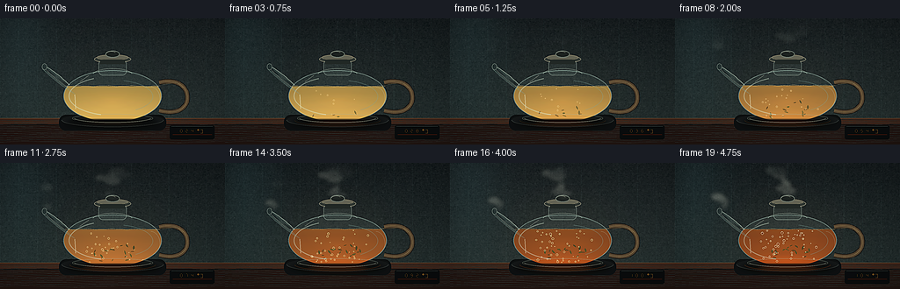
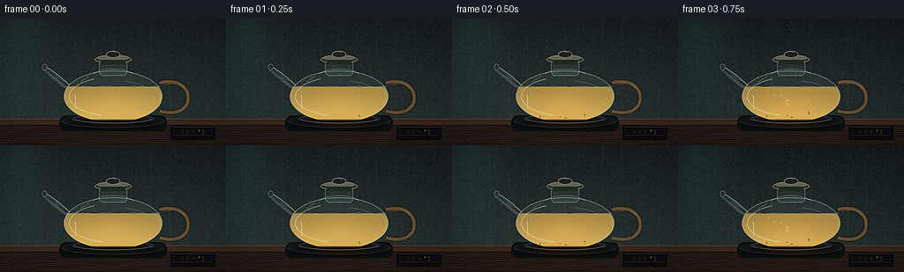
展开代码变化
--- 上一保存版本
+++ 本次保存版本
@@ -168,7 +168,7 @@
def draw_liquid(base, t):
- surface = lerp(83.0, 80.7, t) + 0.55 * math.sin(t * 7.0)
+ surface = lerp(77.0, 75.1, t) + 0.50 * math.sin(t * 7.0)
yy, xx = np.mgrid[0:H, 0:W].astype(np.float32)
xb, yb = xx / SS, yy / SS
@@ -203,6 +203,7 @@
# Suppress the bottom edge for a glassy, submerged look.
mask_arr = np.asarray(mask).astype(np.float32)
mask_arr *= np.clip((116.0 - yb) / 2.2, 0, 1)
+ mask_arr *= np.clip((yb - surface) / 0.75, 0, 1)
mask = Image.fromarray(mask_arr.astype(np.uint8), "L")
base.paste(liquid_img, (0, 0), mask)
@@ -335,14 +336,14 @@
# Spout, drawn as a translucent swept glass form.
layer = Image.new("RGBA", (W, H), (0, 0, 0, 0))
d = ImageDraw.Draw(layer)
- upper = cubic((78, 76), (67, 68), (58, 62), (51, 56), 24)
- lower = cubic((51, 60), (60, 68), (72, 80), (84, 87), 24)
+ upper = cubic((79, 76), (70, 67), (60, 59), (49, 53), 24)
+ lower = cubic((49, 58), (58, 67), (72, 79), (85, 86), 24)
polygon = upper + lower[::-1]
d.polygon(pts(polygon), fill=(122, 157, 151, 50))
d.line(pts(upper), fill=(190, 216, 203, 128), width=p(0.8))
d.line(pts(lower), fill=(125, 157, 151, 88), width=p(0.7))
- d.line(pts(cubic((76, 79), (65, 73), (59, 68), (53, 61), 18)), fill=(228, 238, 219, 70), width=p(0.48))
- d.ellipse((p(49.2), p(54.4), p(54.0), p(61.4)), fill=(58, 83, 79, 45), outline=(191, 216, 204, 120), width=p(0.55))
+ d.line(pts(cubic((77, 79), (68, 73), (60, 67), (52, 58), 18)), fill=(228, 238, 219, 70), width=p(0.48))
+ d.ellipse((p(47.8), p(51.5), p(53.2), p(58.8)), fill=(58, 83, 79, 45), outline=(191, 216, 204, 120), width=p(0.55))
# Bronze-wrapped handle: a dark inner void plus warm rim light.
hc = [(180, 73), (203, 70), (214, 83), (212, 99), (199, 108), (181, 105)]
@@ -368,9 +369,9 @@
def draw_steam(base, t):
- if t < 0.17:
+ if t < 0.13:
return
- strength = smoothstep(0.17, 0.95, t)
+ strength = smoothstep(0.13, 0.84, t)
layer = Image.new("RGBA", (W, H), (0, 0, 0, 0))
d = ImageDraw.Draw(layer)
for i in range(25):
@@ -383,11 +384,11 @@
y = origin_y - phase * float(r.uniform(28.0, 47.0))
x = origin_x + math.sin(phase * 6.5 + i * 1.37) * (2.0 + phase * 7.0) + phase * float(r.uniform(-6.0, 6.0))
rad = float(r.uniform(2.4, 7.0)) * (0.65 + phase * 1.25)
- alpha = int(42 * strength * math.sin(math.pi * phase) * float(r.uniform(0.65, 1.15)))
+ alpha = int(64 * strength * math.sin(math.pi * phase) * float(r.uniform(0.65, 1.15)))
if alpha <= 0:
continue
d.ellipse((p(x - rad), p(y - rad * 0.62), p(x + rad), p(y + rad * 0.62)), fill=(216, 224, 210, alpha))
- layer = layer.filter(ImageFilter.GaussianBlur(p(2.4)))
+ layer = layer.filter(ImageFilter.GaussianBlur(p(2.2)))
base.alpha_composite(layer)
候选 03播放与检查图
点击播放 · 原生 RGB 像素

展开代码变化
--- 上一保存版本
+++ 本次保存版本
@@ -336,14 +336,14 @@
# Spout, drawn as a translucent swept glass form.
layer = Image.new("RGBA", (W, H), (0, 0, 0, 0))
d = ImageDraw.Draw(layer)
- upper = cubic((79, 76), (70, 67), (60, 59), (49, 53), 24)
- lower = cubic((49, 58), (58, 67), (72, 79), (85, 86), 24)
+ upper = cubic((79, 76), (70, 70), (61, 63), (53, 56), 24)
+ lower = cubic((53, 60), (60, 67), (72, 78), (85, 85), 24)
polygon = upper + lower[::-1]
d.polygon(pts(polygon), fill=(122, 157, 151, 50))
d.line(pts(upper), fill=(190, 216, 203, 128), width=p(0.8))
d.line(pts(lower), fill=(125, 157, 151, 88), width=p(0.7))
- d.line(pts(cubic((77, 79), (68, 73), (60, 67), (52, 58), 18)), fill=(228, 238, 219, 70), width=p(0.48))
- d.ellipse((p(47.8), p(51.5), p(53.2), p(58.8)), fill=(58, 83, 79, 45), outline=(191, 216, 204, 120), width=p(0.55))
+ d.line(pts(cubic((77, 79), (69, 75), (61, 69), (55, 60), 18)), fill=(228, 238, 219, 70), width=p(0.48))
+ d.ellipse((p(51.8), p(54.3), p(56.8), p(61.4)), fill=(58, 83, 79, 45), outline=(191, 216, 204, 120), width=p(0.55))
# Bronze-wrapped handle: a dark inner void plus warm rim light.
hc = [(180, 73), (203, 70), (214, 83), (212, 99), (199, 108), (181, 105)]
候选 04播放与检查图
候选 05播放与检查图
点击播放 · 原生 RGB 像素
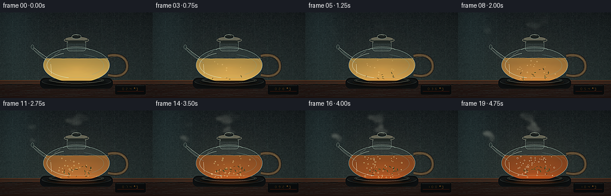
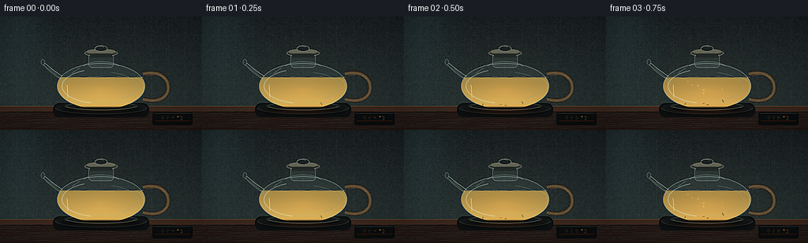
展开代码变化
--- 上一保存版本
+++ 本次保存版本
@@ -16,6 +16,12 @@
SS = 4
W, H = SPEC_W * SS, SPEC_H * SS
RNG = np.random.default_rng(1092026)
+BACKGROUND_GRAIN = RNG.normal(0, 1, (H // 4, W // 4)).astype(np.float32)
+BACKGROUND_GRAIN = np.asarray(
+ Image.fromarray(((BACKGROUND_GRAIN - BACKGROUND_GRAIN.min()) * 25).astype(np.uint8)).resize(
+ (W, H), Image.Resampling.BILINEAR
+ )
+)
def p(value):
@@ -82,9 +88,7 @@
seam &= (yn < 0.79)
img += seam[..., None] * np.array([4, 6, 6], dtype=np.float32)
- noise = RNG.normal(0, 1, (H // 4, W // 4)).astype(np.float32)
- noise = np.asarray(Image.fromarray(((noise - noise.min()) * 25).astype(np.uint8)).resize((W, H), Image.Resampling.BILINEAR))
- img += (noise[..., None] - 12) * 0.16
+ img += (BACKGROUND_GRAIN[..., None] - 12) * 0.16
return np.clip(img, 0, 255).astype(np.uint8)
@@ -198,13 +202,13 @@
heat = np.exp(-(((xb - 128) / 44) ** 2 + ((yb - 114) / 7.5) ** 2))
liquid += heat[..., None] * np.array([40, 12, 1], dtype=np.float32) * t
- liquid_img = Image.fromarray(np.clip(liquid, 0, 255).astype(np.uint8), "RGB").convert("RGBA")
+ liquid_img = Image.fromarray(np.clip(liquid, 0, 255).astype(np.uint8)).convert("RGBA")
mask = liquid_mask(t, surface)
# Suppress the bottom edge for a glassy, submerged look.
mask_arr = np.asarray(mask).astype(np.float32)
mask_arr *= np.clip((116.0 - yb) / 2.2, 0, 1)
mask_arr *= np.clip((yb - surface) / 0.75, 0, 1)
- mask = Image.fromarray(mask_arr.astype(np.uint8), "L")
+ mask = Image.fromarray(mask_arr.astype(np.uint8))
base.paste(liquid_img, (0, 0), mask)
# Meniscus: a bright curved line where the tea meets the glass.
@@ -270,7 +274,7 @@
width=p(0.35),
)
# Clip leaves to the tea body and below the surface.
- clip = Image.fromarray(liquid_mask(t, surface), "L")
+ clip = Image.fromarray(liquid_mask(t, surface))
base.paste(layer, (0, 0), Image.composite(layer.getchannel("A"), Image.new("L", (W, H), 0), clip))
@@ -300,7 +304,7 @@
fill=(255, 249, 216, min(255, alpha + 40)),
width=p(0.34),
)
- clip = Image.fromarray(liquid_mask(t, surface), "L")
+ clip = Image.fromarray(liquid_mask(t, surface))
base.paste(layer, (0, 0), Image.composite(layer.getchannel("A"), Image.new("L", (W, H), 0), clip))
@@ -463,13 +467,13 @@
# Gentle warm/cool grade and restrained highlight bloom.
arr[..., 0] *= 1.035
arr[..., 2] *= 0.965
- image = Image.fromarray(np.clip(arr, 0, 255).astype(np.uint8), "RGB")
+ image = Image.fromarray(np.clip(arr, 0, 255).astype(np.uint8))
bloom_src = image.filter(ImageFilter.GaussianBlur(p(2.0)))
bloom = np.asarray(bloom_src).astype(np.float32)
arr = np.asarray(image).astype(np.float32)
mask = np.clip((arr.max(axis=2) - 152) / 103.0, 0, 1)[..., None] * 0.12
arr = arr + bloom * mask
- image = Image.fromarray(np.clip(arr, 0, 255).astype(np.uint8), "RGB")
+ image = Image.fromarray(np.clip(arr, 0, 255).astype(np.uint8))
image = ImageEnhance.Contrast(image).enhance(1.035)
image = image.resize((SPEC_W, SPEC_H), Image.Resampling.LANCZOS)
return np.asarray(image, dtype=np.uint8)
@@ -477,7 +481,7 @@
def render_frame(index, total):
t = index / (total - 1)
- base = Image.fromarray(background_layer(t), "RGB").convert("RGBA")
+ base = Image.fromarray(background_layer(t)).convert("RGBA")
draw_counter(base, t)
draw_heat(base, t)
可观测工具轨迹
实际执行的命令与返回图片。
命令 1exit 0
/bin/bash -c "pwd && rg --files -g '"'!*.pyc'"' | sed -n '1,200p'"
命令 2exit 0
/bin/bash -c 'cat prompt.txt'
命令 3exit 0
/bin/bash -c 'cat GENERATION_RULES.md'
命令 4exit 0
/bin/bash -c 'cat task_spec.json'
命令 5exit 0
/bin/bash -c "sed -n '1,240p' artifact_io.py"
命令 6exit 0
/bin/bash -c "sed -n '1,240p' player_template.html"
命令 7exit 0
/bin/bash -c "ls -la && find . -maxdepth 2 -type f -printf '%p %s bytes\\n' | sort"
命令 8exit 0
/bin/bash -c 'python generate.py'
命令 9exit 0
/bin/bash -c "python - <<'PY'
from pathlib import Path
from PIL import Image
import numpy as np
for i in (0, 7, 13, 19):
a=np.asarray(Image.open(Path('frames')/f'{i:02d}.png')).astype(float)
print(i, 'mean', a.mean((0,1)).round(1), 'minmax', int(a.min()), int(a.max()))
PY"命令 10exit 0
/bin/bash -c "python - <<'PY'
from PIL import Image
import numpy as np
for i in [0,7,13,19]:
a=np.asarray(Image.open(f'frames/{i:02d}.png')).astype(float)
print(i, 'liquid', a[88:108,92:164].mean((0,1)).round(1), 'tea max', a[88:108,92:164].max((0,1)))
PY"命令 11exit 0
/bin/bash -c 'ffmpeg -version | head -n 3'
命令 12exit 0
/bin/bash -c "python - <<'PY' import importlib.util for m in ['cv2','imageio','av','moviepy']: print(m, bool(importlib.util.find_spec(m))) PY"
命令 13exit 0
/bin/bash -c 'mkdir -p .tmp/candidate_01 && cp -a frames inspection.png transition_check.png pixels.npz index.html .tmp/candidate_01/'
命令 14exit 0
/bin/bash -c 'python generate.py'
命令 15exit 0
/bin/bash -c 'python generate.py > .tmp/render.log 2>&1 && tail -n 5 .tmp/render.log'
命令 16exit 0
/bin/bash -c 'mkdir -p .tmp/candidate_02 && cp -a frames inspection.png transition_check.png pixels.npz index.html .tmp/candidate_02/'
命令 17exit 0
/bin/bash -c 'python -W error generate.py > .tmp/final_render.log 2>&1; status=$?; tail -n 8 .tmp/final_render.log; exit $status'
命令 18exit 0
/bin/bash -c "python - <<'PY'
from pathlib import Path
import json
import numpy as np
from PIL import Image
root=Path('.')
spec=json.loads((root/'task_spec.json').read_text())
files=sorted((root/'frames').glob('*.png'))
assert len(files)==spec['frames'], len(files)
frames=[]
for f in files:
im=Image.open(f)
assert im.mode=='RGB' and im.size==(spec['width'],spec['height']), (f, im.mode, im.size)
frames.append(np.asarray(im))
frames=np.stack(frames)
z=np.load(root/'pixels.npz')['pixels']
assert z.shape==(spec['height'],spec['width'],spec['frames'])
unpacked=np.stack([(z[:,:,i]>>16)&255 for i in range(spec['frames'])],axis=0)
# Cross-check PNGs against packed tensor.
assert np.array_equal(frames, np.stack([np.stack([(z[:,:,i]>>16)&255,(z[:,:,i]>>8)&255,z[:,:,i]&255],axis=2) for i in range(spec['frames'])],axis=0))
diffs=np.abs(frames[1:].astype(np.int16)-frames[:-1].astype(np.int16)).mean((1,2,3))
print('frames', frames.shape, frames.dtype)
print('pixel tensor', z.shape, z.dtype)
print('size/mode checks: PASS')
print('frame-diff mean min/max', round(float(diffs.min()),3), round(float(diffs.max()),3))
print('index.html bytes', (root/'index.html').stat().st_size)
assert (root/'index.html').stat().st_size > 10000
print('artifact validation: PASS')
PY"视觉工具实际返回图片 1
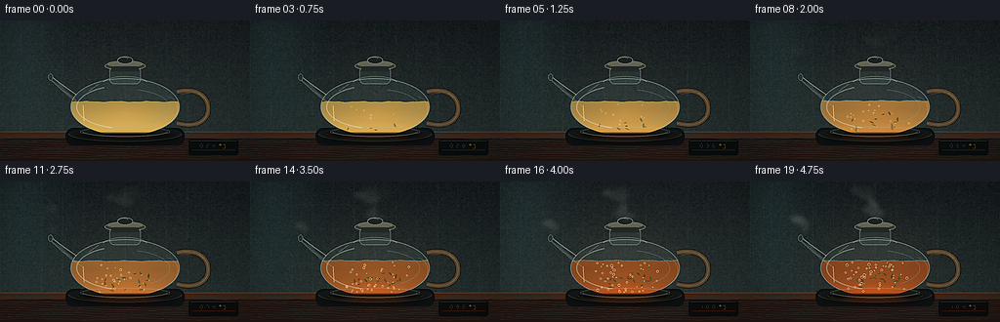
视觉工具实际返回图片 2
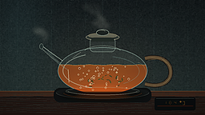
视觉工具实际返回图片 3
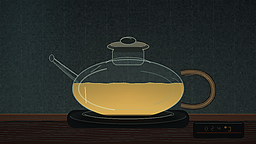
视觉工具实际返回图片 4
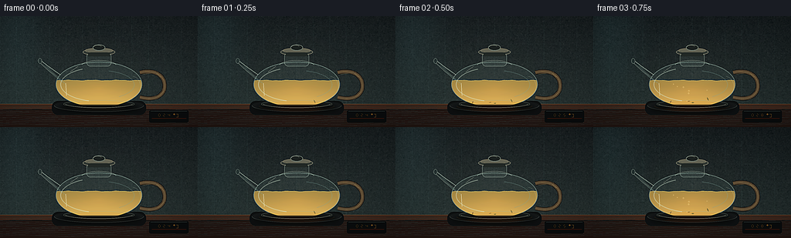
视觉工具实际返回图片 5

视觉工具实际返回图片 6
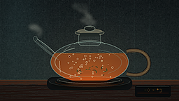
视觉工具实际返回图片 7
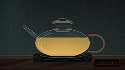
视觉工具实际返回图片 8
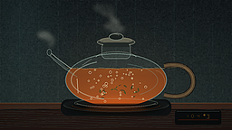
视觉工具实际返回图片 9

视觉工具实际返回图片 10

保存候选 5 份；完成命令 18 次；可验证图片返回 10 张。原始 API 响应与完整日志保留在本地。